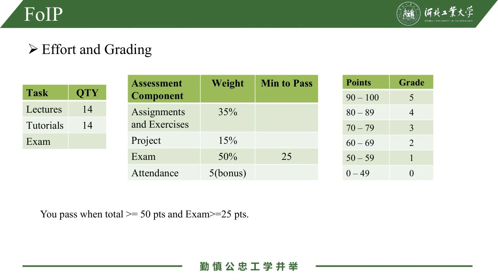
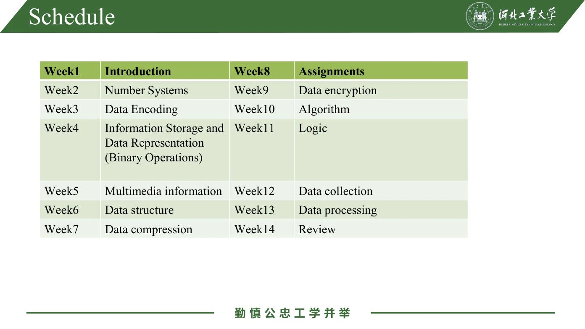
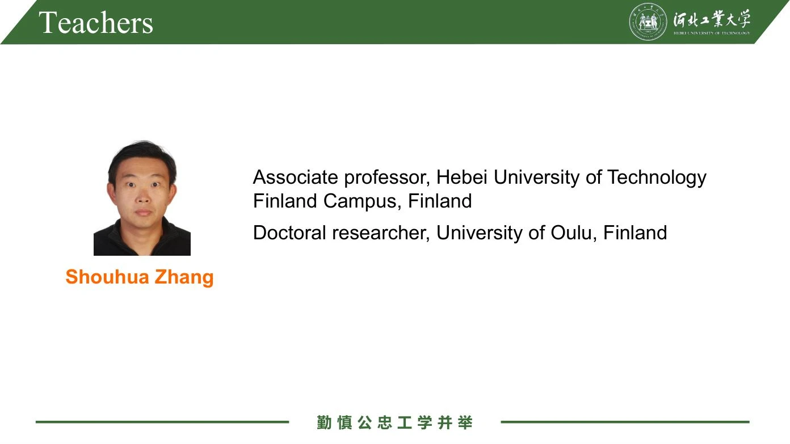

HDD5020 信息处理基础（计算机导论） · 第 01 / 12 讲
Week 1 · 信息、数据、算法、程序与 AI
Introduction: Information, Data, Algorithms and AI
所属章节：第 1 章 计算机与信息处理导论
资料来源 · 3 项 / 已附 0 项
Week1- Introduction/Lecture_0.pdf未附原文件Week1- Introduction/Lecture_1.pdf未附原文件General/Timetable.html未附原文件
未附文件仅列原始名称；版本与核对日期由维护者登记。
本节定位
这是整门课的第一讲，也是全课的世界观：计算机到底在处理什么。答案不是「数字」，而是信息——文字、照片、音乐、地图位置、传感器读数、银行流水，全都被转成 0 和 1 之后才进入机器。这一讲把「信息处理」拆成输入、处理、输出三段，再把「处理」拆成算法与数据结构，最后说明今天的 AI 为什么仍然是同一条流水线上的产物。
课件本身由两份文件组成：Lecture_0.pdf 讲课程行政信息（教师、联系方式、目标、考核、14 周安排），Lecture_1.pdf 讲技术内容（信息、数据、二进制、算法、数据结构、程序、AI）。两份合起来才是完整的第 1 周，所以本讲把它们并成一讲。
本讲是后面所有内容的地基：Week 2 讲数制，就是在回答「0 和 1 怎么表达数」；Week 3 到 Week 7 讲编码与压缩，就是在回答「文字、图像、声音怎么变成 0 和 1」；Week 10、Week 11 讲加密与逻辑，是在回答「这些 0 和 1 怎么保护、怎么判断」。
学完本讲你应当能够：
- 用「输入 → 处理 → 输出」描述任意一个日常信息系统，并指出三段各是什么
- 区分数据（data）与信息（information），并说明处理如何把前者变成后者
- 解释为什么计算机用二进制，以及 n 位能表示 2^n 种不同取值
- 说明「编码」的含义：字符 A 为什么是 65、为什么是 01000001
- 给出算法的定义，并把「找最大值」写成有限步的算法
- 区分算法与程序，说明「算法 + 数据结构 = 程序」的含义
- 说明传统编程与机器学习的差别，以及数据、模型、算力三要素
- 按课件给出的考核比例算出自己需要拿到多少分才能通过
一、先看清这门课：定位、安排与考核
1.1 课程定位
课件把课程名写作 Foundations of Information Processing（信息处理基础），简称 FoIP。课程描述的原意是：系统介绍信息处理的基本概念、方法与技术，内容包括信息的表示与编码、文本与数据处理、多媒体信息处理、信息检索与基本信息安全。课程把理论与动手结合，目标是让学生理解信息在计算机系统中如何被表示与处理，掌握数据与多媒体处理的基本技能，并建立信息安全与数据隐私意识。
课程描述还明确写了后续衔接：本课为数据结构、数据库系统、人工智能导论等后续课程做准备。这句话解释了为什么第 1 讲就要讲算法与数据结构——它们是后面几门课的共同语言。
1.2 五条课程目标
课件列出了学完本课后应达到的五点，可以逐条对应到后面的周次：
| 目标 | 含义 | 主要落在哪几讲 |
|---|---|---|
| 1. 理解信息的概念、类型与表示 | 知道信息是什么、有哪些类型、在计算机里怎么表示 | Week 1、Week 2 |
| 2. 掌握文本、数据与多媒体处理技术 | 会做编码、采样、量化、压缩的计算与判断 | Week 3–Week 7 |
| 3. 会使用基本的数据分析与信息处理工具 | 能动手处理真实文件与数据 | Week 7–Week 9 |
| 4. 应用信息检索方法，具备安全意识 | 会建索引、会算 precision/recall、懂加密 | Week 9–Week 10 |
| 5. 完成小型信息处理项目 | 团队协作与问题求解 | 课程项目（project） |
1.3 教学形式与考核
课程有三种活动：讲座（Lectures，面授讲理论）、习题课（Tutorial / Exercise Sessions，讨论与动手）、团队项目（Team Project，培养协作与实践能力）。课件统计的任务量是讲座 14 次、习题课 14 次。
考核权重是本节最该记住的一张表：
| 考核项 | 权重 | 说明 |
|---|---|---|
| 作业与练习（Assignments and Exercises） | 35% | 每周一份 Exercise，按截止日期在 Moodle 提交 PDF |
| 项目（Project） | 15% | 团队项目 |
| 考试（Exam） | 50% | 权重最大，且另有单科下限 |
| 出勤（Attendance） | 5 分（bonus） | 额外加分，不计入 100% 的分母 |
通过条件写得非常具体：总分 ≥ 50 分，并且考试 ≥ 25 分（"You pass when total >= 50 pts and Exam>=25 pts"）。这条规则的含义是：作业做得再好，考试低于 25 分也不能通过；反过来，考试刚过 25 分而作业全交，总分也可能刚好过线。所以两条线都要守。
等级换算（0–5 分制）如下，注意 50 分是及格线而不是 60 分：
| 总分 | 等级 | 备注 |
|---|---|---|
| 90–100 | 5 | 优秀 |
| 80–89 | 4 | 良好 |
| 70–79 | 3 | 中等 |
| 60–69 | 2 | 合格 |
| 50–59 | 1 | 最低通过档 |
| 0–49 | 0 | 不通过 |
1.4 十四周路线图
课件给出的周次安排与课件文件本身的编号并不完全一致（课件在 Week 8 之后调整过顺序），以实际拿到的讲义文件为准，下表按文件实际内容对齐：
| 周次 | 课件写的主题 | 实际讲义文件内容 |
|---|---|---|
| Week 1 | Introduction | 课程介绍 + 信息与信息处理总览 |
| Week 2 | Number Systems | 数制、位置记数法、进制转换、二进制算术 |
| Week 3 | Data Encoding | 有符号数表示、补码、溢出、小数、IEEE 754 |
| Week 4 | Information Storage and Data Representation | 字符与文本编码（ASCII、Unicode、UTF-8） |
| Week 5 | Multimedia Information | 图像表示（采样、量化、编码、RGB、栅格与矢量） |
| Week 6 | Data Structure | 音频与视频表示（采样率、位深、帧率、数据量） |
| Week 7 | Data Compression | 数据压缩（RLE、字典、Huffman、有损与无损） |
| Week 8 | Assignments | 信息存储与文件表示（存储层次、介质、文件格式、元数据） |
| Week 9 | Data Encryption | 信息检索（布尔检索、倒排索引、TF-IDF、precision/recall） |
| Week 10 | Algorithm | 数据加密（古典密码、OTP、AES、RSA） |
| Week 11 | Logic | 逻辑与信息处理（命题逻辑、真值表、等价律） |
| Week 12–14 | Data collection / Data processing / Review | 本次讲义未取得对应课件，缺口在第 12 讲说明 |
课件原始安排里 Week 12 是数据采集、Week 13 是数据处理、Week 14 是复习。这三周的课件不在本次抽取的文件里，因此本讲义不虚构其内容；复习讲（第 12 讲）只整合已有 11 周的知识点，不新增考点。
1.5 联系方式与提问规范
课件对邮件有硬性规定，属于会被扣分的那种细节：邮件主题必须包含 HDD5020；正文必须写明课程名称、你的正式姓名（Official Name）、学号（Student No）；需要约见（meeting setup）只能通过邮件。教师邮箱是 zhangshouhua@hebut.edu.cn。
这条规定背后的道理与后面 Week 9 的信息检索一致：一封主题只有 "help" 的邮件，在几百封邮件里无法被检索到；主题里带课程代码、正文带学号，等于给邮件建了索引。
二、什么是信息，什么是信息处理
2.1 信息无处不在
课件用一串并列的例子开场：短信、照片与视频、音乐、地图与 GPS 位置、传感器测量值、金融交易、社交媒体帖子、科研数据。随后抛出问题：这些东西有什么共同点？
答案是课件自己给的那句话：它们都能被计算机表示、存储、传输和处理。这句话是本讲的核心。共同点不是「都是数字」，因为它们原本都不是数字；共同点是「都能被转成数字」。
2.2 信息处理的三段式
信息处理（information processing）被定义为：信息的收集、表示、存储、传输、变换与分析。课件把它画成一条最简流水线：
信息 → 输入 → 处理 → 输出紧接着给出一个学生最熟悉的例子：学生答案 → 计算机 → 评分 → 分数。四步对应四件事：学生答案被录入（输入），程序按规则判分（处理），分数被显示（输出），而这个分数已经是一条信息而不是原始数据。
2.3 日常系统的输入、处理、输出
课件用一张表把六个常见应用的 IPO 拆开，这张表值得抄下来，因为它示范了「如何把一句模糊的产品描述变成可分析的模型」：
| 应用 | 输入 | 处理 | 输出 |
|---|---|---|---|
| 搜索引擎 | 查询词 | 检索 + 排序 | 结果列表 |
| 导航 | 当前位置 + 目的地 | 路线计算 | 路线 |
| 网上购物 | 用户 + 商品 | 推荐 | 商品列表 |
| 银行 | 交易请求 | 校验 | 交易结果 |
| 天气应用 | 传感器数据 | 预测 | 天气预报 |
| AI 聊天机器人 | 提示词（prompt） | 模型推理 | 回答 |
课件在这张表下面写了一句总结：计算本质上就是处理信息（"Computing is fundamentally about processing information"）。这句话把「计算机科学」与「信息处理」划了等号。
2.4 一个反问：计算器算不算信息处理系统
课件用 25 × 36 提问：输入 25×36，输出 900，中间发生了什么？这个问题的价值在于逼你想清楚「处理」不是魔法：计算器内部要把十进制转成二进制、查乘法表或做移位加法、再把结果转回十进制显示。第 2 讲就会把这些步骤全部走一遍。
所以计算器当然是信息处理系统，而且是一个把「数制转换」这件事做到看不见的系统。
三、计算机怎样表示信息
3.1 只有 0 和 1
计算机只认得两种状态：开（ON）= 1、关（OFF）= 0。课件给的理由是工程性的：电子器件能可靠地区分两种状态。
这个理由值得展开，因为「为什么不用十进制」是经典的第一问。要在电路里区分十种电压等级，需要极精确的基准与误差容限；区分「高」「低」两个区间则容忍度极大，抗噪声、抗温度漂移、抗器件老化。可靠性的收益远大于「一个符号能表示更多」的便利。这个取舍在 Week 2 讲二进制算术时会再次出现：二进制虽然写起来长，但加法规则只有四条，硬件极简单。
3.2 位与组合数
位（bit，binary digit）是数字信息的最小单位，取值 0 或 1。位数与可能取值数的关系是本节第一个公式：
n 位 → 2^n 种不同取值
| 位数 n | 可能取值数 2^n | 直观说法 |
|---|---|---|
| 1 | 2 | 两种状态 |
| 2 | 4 | 四种组合 |
| 3 | 8 | 八种组合 |
| 8 | 256 | 正好是一个字节能表示的灰度数 |
| 16 | 65 536 | CD 音质的量化级数 |
| 24 | 16 777 216 | RGB 真彩色数 |
| 32 | 约 4.29 × 10^9 | 32 位无符号整数的上限量级 |
这条公式在整门课里反复出现：Week 2 讲字节与字长，Week 3 讲补码范围与 IEEE 754，Week 4 讲 7 位 ASCII 的 128 个字符，Week 5 讲 8 位灰度的 256 级与 24 位 RGB 的 1 677 万色，Week 6 讲 16 位音频的 65 536 级。记住它，后面每一讲都只是换场景。
3.3 编码：字符怎样变成 0 和 1
课件问：文本怎样变成 0 和 1？它先指出一个常见误解——计算机并不直接存储字母 "A" 的形状。它存的是一套编码（encoding）规则下的编号。以 ASCII 为例：
A → 65 → 01000001
B → 66 → 01000010三步各自是一次「换一种表示」：字形 A 换成人能读的编号 65，65 换成二进制 01000001。第 4 讲会把中间的 65 叫做码位（code point），把 01000001 叫做字节，并强调这两者不是一回事。
这也解释了同一串 0 和 1 为什么会有歧义：01000001 按 ASCII 解读是字母 A，按无符号整数解读是 65，按某个图像格式的某个字段解读可能是别的意思。Week 8 讲文件格式时会专门讲这一点。
3.4 四个「同一件事」
课件用四行并列把这条路走完，这是全课最重要的一页：
| 信息类型 | 转换链 | 后面在哪讲 |
|---|---|---|
| 文本 | 文本 → 数字 → 二进制 | Week 4 字符编码 |
| 图像 | 图像 → 数字 → 二进制 | Week 5 图像表示 |
| 音频 | 音频 → 数字 → 二进制 | Week 6 音频表示 |
| 视频 | 视频 → 数字 → 二进制 | Week 6 视频表示 |
课件在下面写了一句解释：计算机之所以能处理不同类型的信息，是因为把它们都表示成了数据。注意这里的用词——是「表示成数据」，不是「理解」。计算机不理解一张照片的内容，它只是处理一堆数字。
3.5 数据与信息的区别
这是本讲最容易考、也最容易混淆的一对概念。课件的定义很短：
| 概念 | 英文定义 | 中文解释 | 课件例子 |
|---|---|---|---|
| 数据 | Raw observations or values. | 未经解释的原始观测值或符号 | 160, 174, 165, 164, 169；dog, cat, rabbit, hamster, parrot |
| 信息 | Data interpreted in a meaningful context. | 放进有意义的语境之后的数据 | 「某学生的身高是 165 cm」 |
判据只有一条：有没有语境。165 单独出现是数据，因为不知道是身高、体重、分数还是价格；一旦说「这是 Alice 的身高，单位厘米」，它就是信息。课件在两者之间画了一个箭头，标着 processing——处理就是加语境、做解释、做计算的那一步。
3.6 计算机对数据能做的九件事
课件列了九个动词，它们构成了「处理」的全集，也是后面每一讲的操作清单：
store search sort compare calculate transform analyze visualize learn用中文对应：存储、检索、排序、比较、计算、变换、分析、可视化、学习。课件随后用一张学生成绩表把这些动词落地：
Alice 85
Bob 72
Carol 91
David 64对这张表，计算机可以算平均分、找最大值、按分数排序、筛出及格的人、生成统计量、画成图。课件紧接着提出关键问题：计算机怎么知道要做这些？——这正是下一节「算法」要回答的。
四、算法：把「做什么」写成有限步
4.1 定义
课件的定义是：算法是解决一个问题或完成一次计算的有限、且每一步都有明确定义的步骤序列（"a finite sequence of well-defined steps for solving a problem or performing a computation"）。
定义里有三个词都是判据，缺一不可：有限（必须终止，不能无限循环）、明确定义（每一步都能被机械执行，不含「适当调整」这种模糊指令）、步骤序列（有先后顺序）。
4.2 例：找最大值
课件给的例子是：输入 8, 3, 12, 5, 9，找出最大的数。它的写法非常朴素：
- 假定第一个数 8 是当前最大值
- 与 3 比较：3 不大于 8，最大值不变
- 与 12 比较：12 大于 8，最大值改为 12
- 与 5 比较：不大于 12，最大值不变
- 与 9 比较：不大于 12，最大值不变
- 输出 12
这个算法只需要一次遍历，比较次数是 n − 1（5 个数比较 4 次）。它也是后面所有「扫描一遍就够」的算法的原型：Week 9 的检索、Week 11 的条件判断都用同样的骨架。
注意算法必须能处理边界：如果输入是空的呢？如果所有数相同呢？课件没写，但一个合格的算法应当交代。这类「课件没写、考试会问」的补全属于拓展，不改变原知识点。
4.3 算法与程序的区别
课件用一张链式图区分两者：
问题 → 算法 → Python / Java / C++ / … → 程序 → 计算机| 概念 | 是什么 | 例子 |
|---|---|---|
| 算法（algorithm） | 解决问题的过程，与语言无关 | 「逐个比较，保留较大者」 |
| 程序（program） | 算法在某种编程语言中的实现 | max(nums) 或一段 for 循环 |
判据：算法可以口述、可以画流程图、可以用伪代码写，同一算法可以有无数个程序实现。反过来，一段程序必定对应某个算法（哪怕作者没意识到）。
五、数据结构：把数据摆成好用的形状
5.1 为什么需要数据结构
课件的理由是：不同的组织方式会让不同的操作变快。同一批数据，用数组存和用哈希表存，查找的代价完全不同。
5.2 八种基本结构
课件列了八种，这里按「解决什么形状的问题」分组，便于记忆：
| 结构 | 中文 | 典型形状/用途 |
|---|---|---|
| Array | 数组 | 连续排列、按下标随机访问 |
| Linked List | 链表 | 节点用指针串起来、插入删除便宜 |
| Stack | 栈 | 后进先出（LIFO），如撤销操作 |
| Queue | 队列 | 先进先出（FIFO），如打印任务排队 |
| Tree | 树 | 层次结构，如目录、分类 |
| Heap | 堆 | 快速取最小/最大，如优先队列 |
| Hash Table | 哈希表 | 按键快速查找，平均常数时间 |
| Graph | 图 | 点与边的关系，如路网、社交网络 |
5.3 定义与核心问题
课件给的定义是：数据结构是有系统地组织与访问数据的方式（"a systematic way of organizing and accessing data"）。定义里有两个动词：organize（组织）与 access（访问）。只组织不访问没有意义，访问方式决定了组织的形状。
课件把核心问题写成一句话：应当怎样组织数据，才能使各种操作高效完成？注意它问的是「操作」，不是「存储」——数据结构是为操作服务的。
5.4 一句被引用无数次的话
课件引用了一个著名等式，并配了一个例子：
算法 + 数据结构 = 程序
问题 → 数据 → 数据结构 + 算法 → 程序例子：在两个城市之间找一条路 = 图（数据结构）+ 最短路径算法 = 导航系统。这个例子把第 1 讲的三块内容（问题、数据、程序）串成了一条线，也是 Week 9 讲倒排索引时的同一思路。
六、从传统编程到 AI
6.1 规则驱动的传统编程
传统编程的模式是：规则 + 数据 → 程序 → 输出。课件给的例子是一段判定及格与否的逻辑：
IF score >= 50 THEN pass
ELSE fail关键在于最后那句：规则由程序员定义。要判定「什么样的作文是优秀的」，程序员得先把标准写成 if-else，而这件事往往做不到。
6.2 数据驱动的机器学习
机器学习换了一个方向：不再逐条写规则，而是给数据 + 学习算法，让它产出一个模型：
数据 + 学习算法 → 模型
新数据 → 训练好的模型 → 预测这个转向的意义是：人负责给例子，机器负责找规律。代价是模型的行为不再能逐行读懂，也不保证在所有输入上都对。
6.3 AI 的三根支柱
课件把现代 AI 的基础归为三样：
| 支柱 | 作用 | 缺了会怎样 |
|---|---|---|
| 数据（Data） | 提供例子与信息 | 没有样本，学不到规律 |
| 模型（Models） | 学习模式、做预测或生成 | 没有容量，规律表达不出来 |
| 算力（Compute） | 提供训练与推理所需资源 | 训练跑不完，模型做不大 |
6.4 ChatGPT 为什么显得聪明
课件给了一个刻意简化的视角：海量数据 + 大模型 + 巨大算力 → 训练 → 训练好的模型 → 提示词 → 回答。并在下面写了一句很重要的澄清：
七、第一天活动：拆解一个 APP
课件留了一个课堂活动：选一个 APP（Google Maps、YouTube、Spotify、Instagram、ChatGPT、网上银行、外卖），回答五个问题——它用什么数据？处理什么信息？可能用什么算法？什么数据结构有用？哪里可能有 AI？
然后以 Google Maps 为范例，给了四张清单。这四张清单是本讲的「样板答案」，也是考试里「分析一个系统」类题目的答题模板。
7.1 它使用哪些数据
- 地图数据（map data）：道路、路口、建筑、地址
- 位置数据（location data）：用户的 GPS 位置
- 交通数据（traffic data）：当前车速与拥堵情况
- 公共交通数据：公交、火车、地铁路线与时刻表
- 商业数据：餐厅、商店、酒店、营业时间、评价
- 历史数据：历史交通模式与通行时间
- 用户生成数据：事故上报、封路报告
7.2 它处理哪些信息
- 当前位置、目的地
- 道路距离、通行时间
- 交通状况、可行路线
- 公共交通换乘方案
- 预计到达时间（ETA）
- 封路与事故
7.3 它可能用哪些算法
| 算法族 | 课件举例 | 解决什么 |
|---|---|---|
| 最短路径 | Dijkstra、A*（A-star） | 在路网里找代价最小的路径 |
| 图算法 | 遍历、连通性分析 | 发现与分析路线 |
| 路径规划（routing） | 按距离/时间/拥堵选路 | 在多个候选路线中选合适的 |
| 搜索与排序 | 检索 + 排序 | 找地点并按相关性排序 |
| 预测算法 | 交通与时间预测 | 估计未来路况与到达时间 |
7.4 它可能用哪些数据结构
| 结构 | 可能的用途 |
|---|---|
| 图（Graph） | 表示道路与路口 |
| 哈希表（Hash table） | 地点、地址、场所的快速查找 |
| 堆 / 优先队列（Heap / Priority queue） | 高效取出「下一个最近的 / 代价最低的」节点 |
| 数组 / 列表（Array / List） | 存位置序列、路线、数据序列 |
| 树（Tree） | 表示层次信息，如分类目录 |
| 字典树（Trie） | 地名与地址的搜索补全（autocomplete） |
「堆」这一行值得特别注意：Dijkstra 算法每次要取出当前距离最小的未访问节点，用堆可以做到对数代价。这就是「数据结构让操作变快」的具体证据，而不是一句空话。
7.5 AI 可能出现在哪里
- 交通预测：预测未来路况
- ETA 预测：预测一段行程要多久
- 路线推荐：按学到的模式与当前状况推荐路线
- 地点推荐：推荐餐厅、商店
- 图像 / 街景分析：识别物体、路牌、建筑
- 地址与地点理解：帮助解释用户查询与位置
八、贯穿全课的三问
课件在最后给出课程哲学：整门课反复问三个问题。
- 问题是什么？（What is the problem?）
- 信息怎么表示？（How can we represent the information?）
- 怎么高效处理它？（How can we process it efficiently?）
这三问对应三次抽象：第一问把杂乱的需求收敛成一个明确任务；第二问问的是编码与数据结构；第三问问的是算法与复杂度。课件最后的总结页把六个关键词与六个问题一一对应，可以直接当成本课的目录：
| 关键词 | 对应的问题 | 本课在哪讲 |
|---|---|---|
| 信息（Information） | 计算机在处理什么？ | Week 1 |
| 数据（Data） | 信息怎样被表示？ | Week 2–Week 6 |
| 算法（Algorithms） | 我们怎样解决问题？ | Week 1、Week 7、Week 9 |
| 数据结构（Data Structures） | 怎样高效组织数据？ | Week 1、Week 8、Week 9 |
| 程序（Programs） | 怎样实现解法？ | Week 1、Week 11 |
| AI | 机器怎样从数据中学习？ | Week 1、Week 9 |
原版图页（源 PDF 插图页）






| English | 中文 | 说明 / 例句 |
|---|---|---|
| information processing | 信息处理 | The collection, representation, storage, transmission, transformation and analysis of information. |
| data | 数据 | Raw observations or values, e.g. 160, 174, 165. |
| information | 信息 | Data interpreted in a meaningful context, e.g. "the student is 165 cm tall". |
| bit | 位（比特） | The smallest unit of digital information; 0 or 1. |
| binary | 二进制 | Base-2 notation using only the digits 0 and 1. |
| encoding | 编码 | A rule that maps symbols to numbers and then to binary, e.g. A → 65 → 01000001. |
| input–process–output | 输入—处理—输出 | The three-stage model of any information-processing system. |
| algorithm | 算法 | A finite sequence of well-defined steps for solving a problem. |
| data structure | 数据结构 | A systematic way of organizing and accessing data. |
| program | 程序 | An implementation of an algorithm in a programming language. |
| machine learning | 机器学习 | Data + learning algorithm → model; the model learns patterns instead of being told rules. |
| model | 模型 | A trained artefact that maps new inputs to predictions or outputs. |
| compute | 算力 | The computational resources needed for training and inference. |
| redundancy | 冗余 | Repeated or predictable information that later allows compression. |
| word length | 字长 | The number of bits a machine handles as one word, usually a multiple of 8. |
用公式 2^n：
8 位：2^8 = 256 种，编号 0–255。这就是一个字节能表示的灰度级数。
16 位：2^16 = 65 536 种，编号 0–65 535。这是 CD 音质的量化级数。
32 位：2^32 = 4 294 967 296 种。若编号从 0 开始，最大值是 2^32 − 1 = 4 294 967 295 ≈ 4.29 × 10^9。
解题套路固定三步：① 数清位数 n；② 算 2^n 得到「有多少种」；③ 若问「最大值」再减 1（因为 0 占掉一个编号）。
8, 3, 12, 5, 9 用课件的算法找最大值，数一数一共比较了几次；若数据有 1 000 个，需要几次？按「假定首个为最大，然后逐个比较」执行：
| 步骤 | 当前最大值 | 比较对象 | 比较结果 |
|---|---|---|---|
| 1 | 8 | — | 初始化 |
| 2 | 8 | 3 | 3 < 8，不变 |
| 3 | 12 | 12 | 12 > 8，更新为 12 |
| 4 | 12 | 5 | 5 < 12，不变 |
| 5 | 12 | 9 | 9 < 12，不变 |
比较次数：第一个数只做初始化、不参与比较，剩下 4 个数各比较一次，共 n − 1 = 4 次。
推广：1 000 个数需要 1 000 − 1 = 999 次比较。一般地，这个算法的时间代价与 n 成正比，记作 O(n)。
注意「更新」动作只在 12 那一步发生一次，更新次数不影响复杂度结论——复杂度看的是比较这种主导操作。
（a）
160, 174, 165, 164, 169 （b）dog, cat, rabbit, hamster, parrot （c）这个五人小组里最高的人 174 cm （d）01000001（a）数据。五个数没有任何标注，不知道是身高、体重还是考试分数，缺语境。
（b）数据。五个动物名同样是原始取值。要注意：「能读懂的单词」不等于「信息」，判据是语境而不是可读性。
（c）信息。它给出了对象（五人小组）、属性（身高）、结论（最高者 174 cm），语境完整，可以直接支撑决策。
（d）数据。而且是有歧义的数据：按 ASCII 是字母 A，按无符号整数是 65。Week 4 与 Week 8 会反复用到这个例子。
通用思路：先问「有没有说明它是什么」，再问「能不能直接拿来决策」。两问都否 → 数据；有一问为是 → 信息。
第一步：找数据。学生姓名、学号、若干次作业分数、考试分数。
第二步：选数据结构。要按学号快速查人 → 哈希表（键为学号）；要按分数排序输出 → 数组；要按班级分组 → 树或哈希表套数组。
第三步：配算法。求平均 → 一次求和再除 n（O(n)）；找最高分 → 例 2 的扫描；排序 → 比较排序（O(n log n)）；筛及格 → 条件过滤（O(n)）。
第四步：写程序。用某种语言实现上述结构与算法，输入输出对齐 IPO 三段。
这一步一步正是「算法 + 数据结构 = 程序」的展开。答题时按这四步写，比直接背结论得分高。
- 用「输入 → 处理 → 输出」描述图书馆借书系统，并指出哪一步是「处理」。
- 4 位、10 位、12 位分别能表示多少种不同取值？各自最大编号是多少？
- 把「找最小值」写成有限步算法，并给出 6 个数时需要比较几次。
- 给出三个例子：一个是数据，一个是由它变成的信息，一个是有歧义的字节串，并说明理由。
- 用自己的话说明「算法」与「程序」的区别，各举一例。
- Google Maps 里「取出下一个最近的节点」为什么适合用堆？换成无序数组会慢在哪里？
参考答案与思路
1. 输入：读者证号 + 图书条码；处理：校验证是否有效、书是否在架、额度是否够，写借阅记录并改状态；输出：借阅成功/失败的提示与新到期日。「处理」是中间那一串校验与状态更新，不是扫码动作本身。
2. 2^4 = 16，编号 0–15；2^10 = 1024，编号 0–1023；2^12 = 4096，编号 0–4095。若是有符号数，范围会变成 [-2^(n−1), 2^(n−1) − 1]，Week 3 细讲。
3. 假定第一个为最小，逐个与「当前最小值」比较，更小则更新，最后输出。6 个数比较 5 次；n 个数比较 n − 1 次。
4. 数据：37.2, 37.5, 36.9；信息：这是三人体温，均未超过 37.5 ℃ 的发热线；歧义字节：01000010 既可是字母 B，也可是整数 66。
5. 算法是步骤描述（「逐个比较、保留较大者」），可以口述、与语言无关；程序是它在某语言里的实现（一段 for 循环）。同一算法可有 Python、Java 两版程序；但一段能跑的程序必然对应某个算法。
6. Dijkstra 每扩展一步都要取出「当前距离最小的未访问节点」。堆（优先队列）取出最小值的代价是 O(log n)；无序数组每次要扫一遍找最小，代价 O(n)，而这样的取出要重复 n 次，总代价从 O(n log n) 退化到 O(n^2)。路网节点可达百万级，差别就是秒与分钟。
2^n 与「最大值 = 2^n − 1」；② 数据与信息的区分（给例子判，给例子造）；③ 算法定义里的「有限」「明确定义」；④ IPO 三段拆解任意系统；⑤ 算法与程序的差别；⑥ 「算法 + 数据结构 = 程序」。dog, cat, rabbit 是数据，因为缺语境；判据是语境，不是可读性。2^n − 1，问「最大值」答 2^n，两者互换。记法：种数不减，编号从 0 起所以最大值减 1。方法清单
拆解任意一个信息系统（答题模板）
- 写出系统名，一句话说清它给谁解决什么问题
- 列输入：用户给什么、传感器给什么、系统自己带什么（地图、历史数据）
- 列处理：校验 → 计算 → 排序/筛选 → 生成结果
- 列输出：直接给用户看的东西（结果、路线、分数、预报）
- 指出算法：哪一步是「找最优」「排序」「预测」
- 指出数据结构：哪一步需要「快速查找」「按序取出」「表示关系」
- 指出 AI：哪一步是「从数据学出来的」，而不是写死的规则
判断数据还是信息（三步）
- 问：它有没有说明「这是什么」？（对象、属性、单位）
- 问：它能不能直接支撑一个决定？
- 两问皆否 → 数据；有一问为是 → 信息
- 若两者都不是，检查是不是「有歧义的字节串」，那属于编码问题，参阅 Week 4
算位数与取值数（四步）
- 数清位数 n（8 位、16 位、24 位、32 位）
- 算
2^n得到取值种数 - 若问编号范围：0 到
2^n − 1 - 若是有符号数：改用
[−2^(n−1), 2^(n−1) − 1]（Week 3）
| 源文件 | 位置 | 覆盖的知识点 |
|---|---|---|
| Week1- Introduction/Lecture_0.pdf | p1–p3 | 课程名、教师、邮箱与邮件规范（主题含 HDD5020、正文写课程名/姓名/学号、约见只走邮件） |
| Week1- Introduction/Lecture_0.pdf | p4–p6 | 课程描述、五条课程目标、三种教学活动（讲座/习题课/团队项目） |
| Week1- Introduction/Lecture_0.pdf | p7 | 考核权重（作业 35%、项目 15%、考试 50%、出勤 5 分 bonus）、通过条件（总分 ≥ 50 且考试 ≥ 25）、0–5 等级换算 |
| Week1- Introduction/Lecture_0.pdf | p8–p9 | 十四周安排表、课程材料在 Moodle |
| Week1- Introduction/Lecture_1.pdf | p2–p7 | 信息无处不在、信息处理定义、IPO 流水线、六个日常系统的 IPO 表、计算器之问 |
| Week1- Introduction/Lecture_1.pdf | p8–p11 | 二进制与 ON/OFF、bit 与 2^n、ASCII 编码 A→65→01000001、文本/图像/音频/视频四条转换链 |
| Week1- Introduction/Lecture_1.pdf | p12–p14 | 数据与信息的定义与例子、计算机对数据的九种操作、学生成绩表 |
| Week1- Introduction/Lecture_1.pdf | p15–p19 | 算法定义、找最大值例、算法与程序的链式图、八种数据结构、数据结构的定义与核心问题、算法 + 数据结构 = 程序 |
| Week1- Introduction/Lecture_1.pdf | p20–p23 | 传统编程（规则 + 数据）、机器学习（数据 + 学习算法 → 模型）、AI 三要素、ChatGPT 的简化视角 |
| Week1- Introduction/Lecture_1.pdf | p24–p31 | 第一天活动五问、Google Maps 的数据/处理/算法/结构/AI 五张清单、课程三问与总结页 |
| （跳过）General/Timetable.html | 全文 | 只有一个跳转到 TimeEdit 的外链，无可抽取的课程内容；周次信息已由 Lecture_0 p8 覆盖 |
| （跳过）_info 系列 HTML | 全文 | Moodle 页面外壳（导航、登录信息）、公告为空、Q&A 仅一条锁定的 "Course Exam" 帖、Feedback 为问卷，均无知识内容 |
| （补充） | — | 「为什么用二进制」的可靠性论证、算法边界情形（空输入、全相同）、Dijkstra 使用堆的代价对比属于衔接性拓展，课件只给结论 |